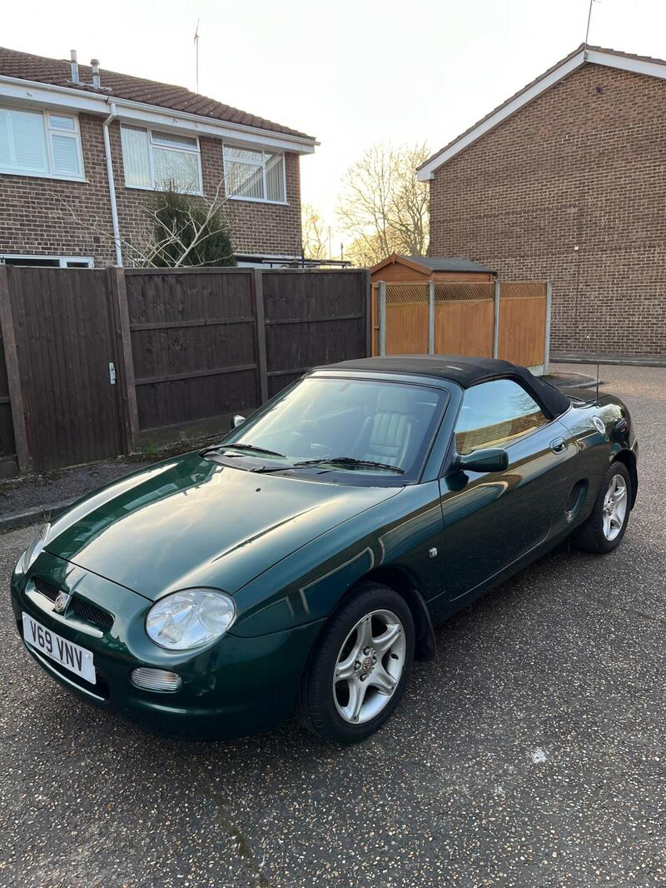
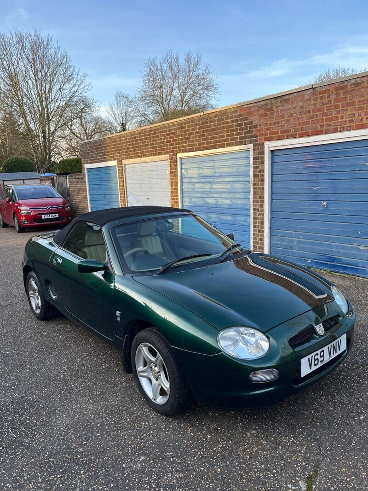
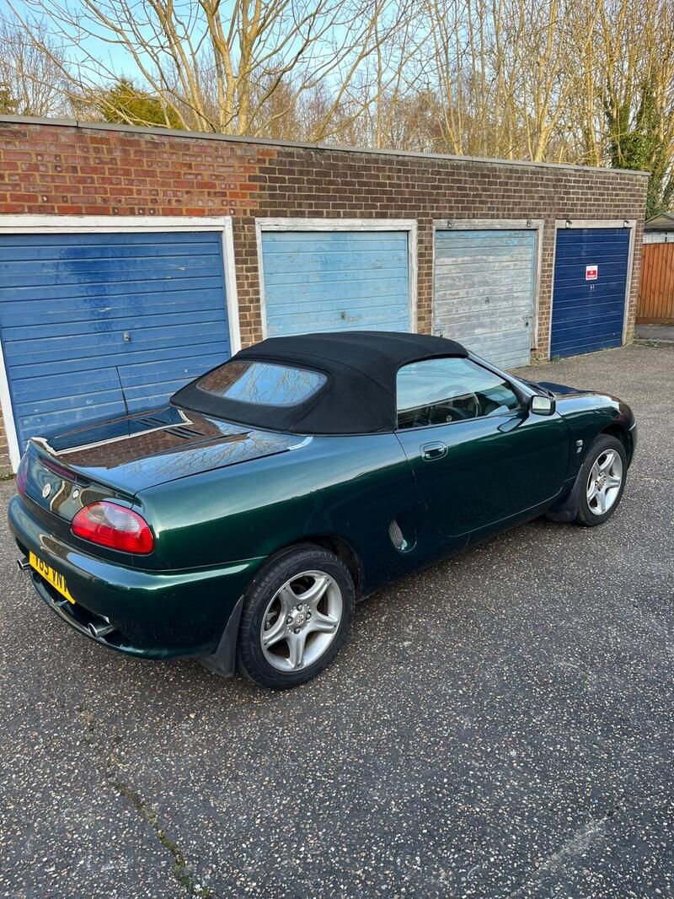
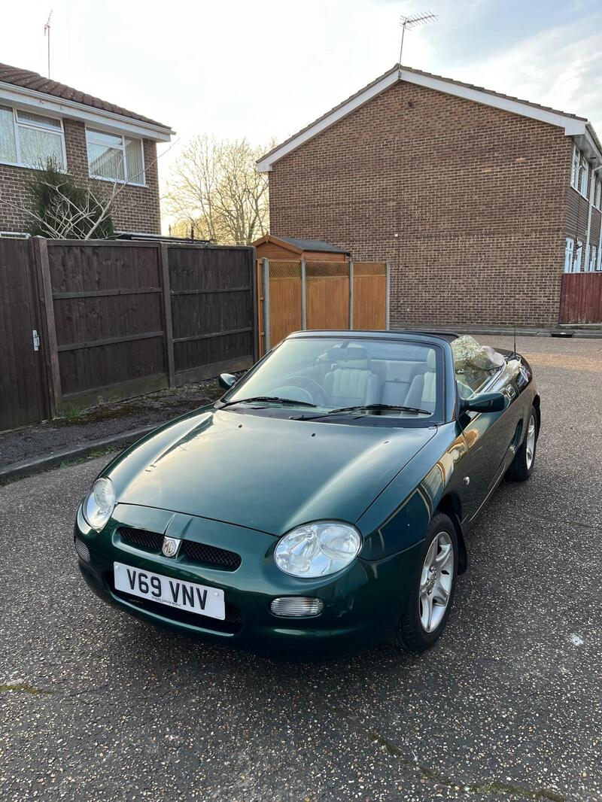

Seller photos from the AutoTrader ad.
MG MGF 1.8i VVC
A cherished MGF. Head-gasket proof is everything.
Key facts
| Price | £2,250 |
|---|---|
| Year | 1999 |
| Miles | 87,000 |
| Model | MG MGF 1.8i VVC |
| Colour | Green |
| Registration | 1999 (V reg) |
| Owners | 8 owners |
| Service history | Not stated |
| MOT | Not stated |
| Seller | Private |
| Location | Staines |
| From GU7 | 17 mi (AutoTrader) |
| Checked | 13 Oct 2026 |
Why buy it
- VVC with an extensive service history, 9 years with the owner (ad)
Things to check
Ask for head-gasket (MLS) evidence
Check the coolant pipes
- MG MGF / TF weak spots
Can be serious underneath; mild-steel underfloor coolant pipes rust; radiators corrode. K-series head gasket – want proof of MLS gasket, revised oil rail, replaced dowels; VVC mechanism; Hydragas suspension on MGF.
Seller says (extract)
“1999 MGF 1.8 VVC Sensitively maintained - original parts when required - extensive service history. Reluctantly selling my much-loved MGF VVC 1.8 due to simply not driving it enough anymore. I've owned and cared for this car for the last 9 years and it has been maintained properly regardless of cost. 87,000 miles with extensive service history and serviced yearly including regular oil changes. This is an honest, well cared for example with lots of work completed over the years using genuine/original parts no cheap aftermarket replacements. Key points: 1.8 VVC engine 87,000 miles Long service history MOT until March 2027 with no advisories Head gasket replaced - no issues Cambelt and water pump replaced around 2 years ago (less than 1,000 miles since) Hydragas suspension professionally refurbished with no leaks Underside professionally sealed/protected Runs and drives beautifully…”